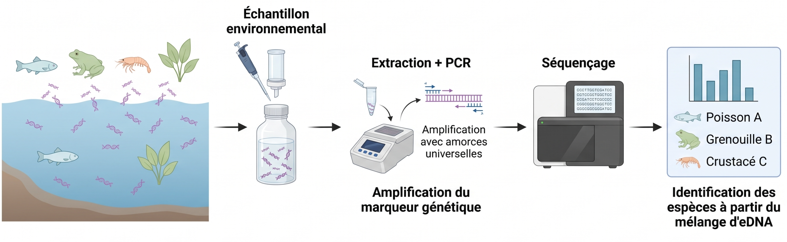
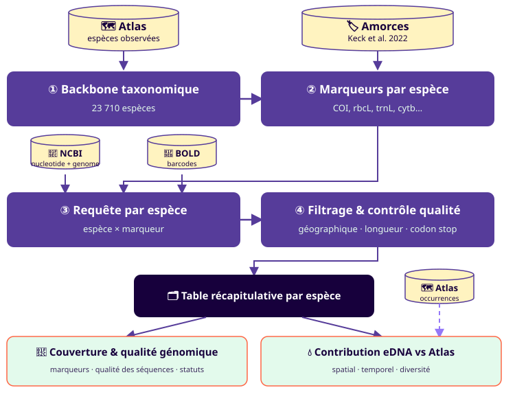
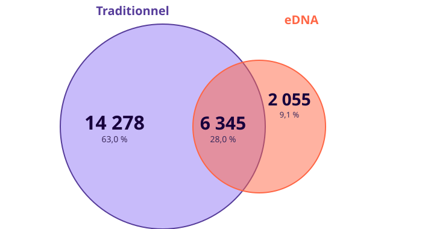
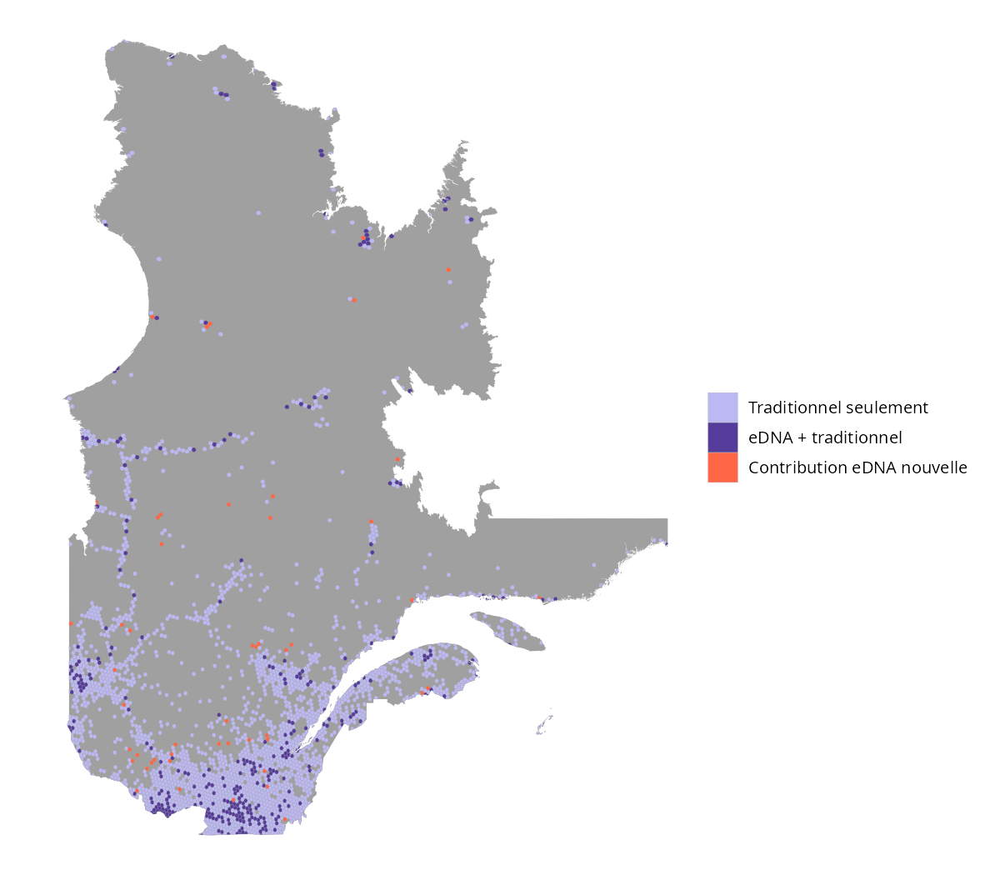

%%{init: {'theme':'base', 'themeVariables': {'fontFamily':'Overpass, sans-serif','fontSize':'20px'}, 'flowchart': {'padding':34,'nodeSpacing':55,'rankSpacing':55,'curve':'linear'}}}%%
flowchart LR
A["`**① Échantillonnage**
Contamination
Plan d'échantillonnage`"]
B["`**② Laboratoire**
Erreur humaine
→ erreur d'instrument`"]
C["`**③ Séquençage**
Prévalence de l'ADNe
Qualité de l'ADNe`"]
D["`**④ Assignation**
Qualité base de référence
Estimation de l'erreur`"]
A --> B --> C --> D
Portrait génomique de la Biodiversité du Québec
Steve Vissault
INRS
Genovalia / Université Laval
Avec la collaboration de A. Fuster, B. Mercier, D. Gravel, M.P. Brochu, V. Langlois
Introduction
Qu’est-ce que l’ADNe ?
L’ADN environnemental (ADNe) : matériel génétique collecté directement dans l’environnement (eau, sol, air, etc.) sans avoir à capturer ou isoler l’organisme.
Warning
Focus sur Metabarcoding: détection simultanée de plusieurs taxons à partir d’un marqueur commun (approche retenue ici).

Limites des données d’occurences Atlas
Le problème avec les données d’occurences : biais spatiaux (nord du Québec) et temporels (saisonnalité). Est-ce que l’ADNe peut venir combler ces lacunes ?
- Faible coût de collecte comparé aux méthodes traditionnelles.
- Sensible à la détection des espèces rares ou cryptiques.
Questions de recherche
Au Québec : disposons-nous d’une bonne couverture génomique pour les taxons connus, et ces séquences comblent-elles les biais d’échantillonnage traditionnels?
- Évaluer la complémentarité des séquences ADNe pour compléter les données de biodiversité
- Déterminer l’ampleur des trous dans les assignations et prioriser le travail de référencement
- Évaluer la qualité des séquences disponibles pour le suivi de la biodiversité
Matériel et méthodes
Schéma intégrateur de la méthode
Pipeline reproductible (package R QCGenomLandscape, orchestré avec targets)

Résultats
La complémentarité du métabarcoding
avec les inventaires traditionnels au Québec
Résultats des requêtes
| Indicateur | Valeur |
|---|---|
| Enregistrements NCBI | 849 850 |
| Enregistrements BOLD | 116 869 |
| Espèces avec génome mitochondrial | 2 634 (11,1 %) |
Résultats des requêtes
Sur 22 678 espèces d’Atlas couvertes : 6 345 vues par les deux, 2 055 eDNA seulement, 14 278 traditionnel seulement — 28,0 % de similarité

Les 2 055 espèces eDNA seulement
Ça se concentre dans 5 ordres d’insectes (1 686 espèces, 80 % du total) + les champignons :
| Ordre | Espèces | % |
|---|---|---|
| Diptera (mouches) | 573 | 27,9 % |
| Hymenoptera (guêpes, abeilles, fourmis) | 350 | 17,0 % |
| Lepidoptera (papillons) | 300 | 14,6 % |
| Hemiptera (punaises) | 238 | 11,6 % |
| Coleoptera (coléoptères) | 181 | 8,8 % |
| Agaricales (champignons) | 153 | 7,4 % |
| Araneae (araignées) | 49 | 2,4 % |
| (autres ordres, résiduel) | 211 | 10,3 % |
Ce sont typiquement des groupes riches en espèces, petits/discrets et coûteux à identifier morphologiquement.
Zoom: Couverture génomiques des espèces à status de conservation

Contribution spatiale


Discussion
Limites de l’ADNe
Notre capacité à inférer la présence d’une espèce est soumise à une propagation de l’erreur: chaque maillon de la chaîne ajoute de l’incertitude.
Comment limiter ces erreurs ?
Des organismes dédiés forment aux bonnes pratiques d’échantillonnage, de laboratoire et de séquençage.
%%{init: {'theme':'base', 'themeVariables': {'fontFamily':'Overpass, sans-serif','fontSize':'20px'}, 'flowchart': {'padding':34,'nodeSpacing':55,'rankSpacing':55,'curve':'linear'}}}%%
flowchart LR
TAQC@{ img: "assets/logos/taqc_logo.svg", w: 360, h: 228 }
GENO@{ img: "assets/logos/Genovalia_Logo_Mauve.png", w: 440, h: 166 }
subgraph SG1["Pratiques adaptées"]
direction LR
A["`**① Échantillonnage**
Contamination
Plan d'échantillonnage`"]
B["`**② Laboratoire**
Erreur humaine
→ erreur d'instrument`"]
C["`**③ Séquençage**
Prévalence de l'ADNe
Qualité de l'ADNe`"]
end
subgraph SG2["Qualité des données"]
D["`**④ Assignation**
Qualité base de référence
Estimation de l'erreur`"]
end
A --> B --> C --> D
TAQC ~~~ B
GENO ~~~ D
style SG1 fill:none,stroke:#FF6645,stroke-width:3px,stroke-dasharray: 6 4
style SG2 fill:none,stroke:#FF6645,stroke-width:3px,stroke-dasharray: 6 4
style TAQC fill:none,stroke:none
style GENO fill:none,stroke:none
Qualité des séquences de références
Hétérogénéité des longueurs de séquences

Distribution des longueurs de séquence COI
Conclusion
Conclusion
- Biais spatial similaire, moins prononcé pour la taxonomie
- Capacité de bonifier des groupes taxonomiques sous-documentés
- Énormément d’hétérogénéité dans la qualité: besoin de standardiser les approches et d’avoir plusieurs marqueurs
- Possibilité d’améliorer la qualité en croisant l’information sur les occurrences avec le séquençage: c’est là tout l’intérêt de croiser les sources de données
- Très mauvaise connaissance de la dark diversity : ce qui n’est pas assigné, ou mal assigné. (BOLD résout en partie ce problème)
Vers une nouvelle plateforme
Design d’une nouvelle plateforme pour intégrer les données d’occurrence et de génomique — avec contrôle de la qualité et harmonisation des sources (BOLD, NCBI, Atlas).
Comment limiter ces erreurs ?
Notre capacité à inférer la présence d’une espèce est soumise à une propagation de l’erreur: chaque maillon de la chaîne ajoute de l’incertitude.
%%{init: {'theme':'base', 'themeVariables': {'fontFamily':'Overpass, sans-serif','fontSize':'20px'}, 'flowchart': {'padding':34,'nodeSpacing':55,'rankSpacing':55,'curve':'linear'}}}%% flowchart LR subgraph SG1["Pratiques adaptées"] direction LR A["`**① Échantillonnage** Contamination Plan d'échantillonnage`"] B["`**② Laboratoire** Erreur humaine → erreur d'instrument`"] C["`**③ Séquençage** Prévalence de l'ADNe Qualité de l'ADNe`"] end subgraph SG2["Qualité des données"] D["`**④ Assignation** Qualité base de référence Estimation de l'erreur`"] end A --> B --> C --> D style SG1 fill:none,stroke:#FF6645,stroke-width:3px,stroke-dasharray: 6 4 style SG2 fill:none,stroke:#FF6645,stroke-width:3px,stroke-dasharray: 6 4